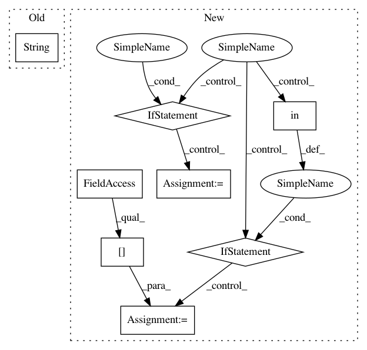

ead53c9bd3205abfe3fdec30f8e6c8b39ea04329,src/pudl/extract/excel.py,GenericExtractor,load_excel_file,#GenericExtractor#Any#Any#,230
Before Change
zf = zipfile.ZipFile(p)
xlsx_filename = self.excel_filename(year, page)
excel_file = pd.ExcelFile(zf.read(xlsx_filename))
self._file_cache[str(p)] = excel_file
return excel_file
def excel_filename(self, year, page):
After Change
p = Path(item["path"])
xlsx_filename = self.excel_filename(part, page)
if xlsx_filename in self._file_cache.keys():
logger.debug("Grabing cached file.")
excel_file = self._file_cache[xlsx_filename]
else:
logger.debug("Grabing new file.")
if p.name != xlsx_filename:
zf = zipfile.ZipFile(p)
excel_file = pd.ExcelFile(zf.read(xlsx_filename))
else:
excel_file = pd.ExcelFile(p)
self._file_cache[xlsx_filename] = excel_file
return excel_file
def excel_filename(self, year, page):
In pattern: SUPERPATTERN
Frequency: 3
Non-data size: 8
Instances
Project Name: catalyst-cooperative/pudl
Commit Name: ead53c9bd3205abfe3fdec30f8e6c8b39ea04329
Time: 2020-11-12
Author: cgosnell@catalyst.coop
File Name: src/pudl/extract/excel.py
Class Name: GenericExtractor
Method Name: load_excel_file
Project Name: austin-taylor/flare
Commit Name: 22804625a64bbdfd86c6ef0f6dede96b9d6c6a32
Time: 2017-07-08
Author: github@austintaylor.io
File Name: flare/tools/whoisip.py
Class Name: WhoisLookup
Method Name: get_name_by_ip
Project Name: catalyst-cooperative/pudl
Commit Name: d22b0ccbccd7c8659c8ec87556a60a8321ccab1c
Time: 2020-11-12
Author: cgosnell@catalyst.coop
File Name: src/pudl/extract/excel.py
Class Name: GenericExtractor
Method Name: load_excel_file